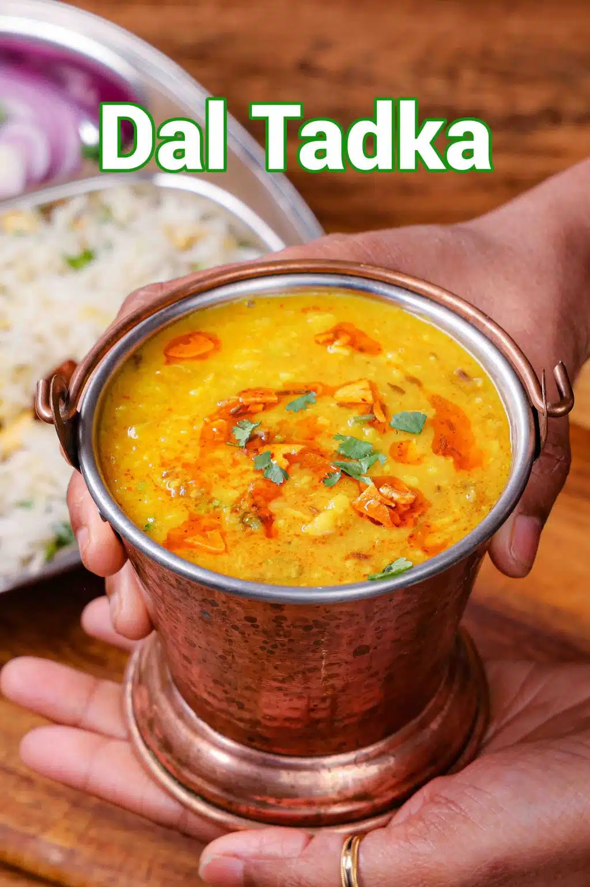

Dal Tadka
Home

Description
This is a simple and healthy lentil-based yellow curry recipe, mainly served with steamed or jeera rice. Yellow
split dal is low in calories and high in protein; hence, it is one of the common recipes for vegetarians in
their daily diet. It is also considered to be a healthy and gentle lentil to the stomach and hence served during
indigestion.
Preparation Time: 10 Minutes
Cooking Time: 20 Minutes
Total Time: 30 Minutes
Ingredients
For Pressure Cooking:
- 1 cup moong dal
- ¼ tsp turmeric
- 1 tsp oil
- 2 cup water
Other Ingredients:
- 1 cup water
- 2 tbsp oil
- 1 tsp cumin
- 1 dried red chilli
- Pinch hing
- 3 chilli, finely chopped
- 5 cloves garlic, finely chopped
- 1 inch ginger, grated
- 1 onion, finely chopped
- ½ tsp turmeric
- ½ tsp chilli powder
- ½ tsp cumin powder
- ½ tsp coriander powder
- 1 tomato, finely chopped
- 1 tsp salt
- 2 tbsp coriander, finely chopped
For Tadka:
- 2 tbsp ghee
- 5 cloves garlic, finely chopped
- ½ tsp cumin
- 1 dried red chilli
- ¼ tsp chilli powder
Steps
- Firstly, in a pressure cooker take 1 cup moong dal, ¼ tsp turmeric, 1 tsp oil, and 2 cup water.
- Pressure cook for 2 whistles.
- Once the pressure releases, add 1 cup water and mix well. This helps to prevent moong dal from turning
mushy. Keep aside.
- In a pan heat 2 tbsp oil. Add 1 tsp cumin, 1 dried red chilli and pinch hing.
- Saute on low flame until the spices are aromatic.
- Further add 3 chilli, 5 cloves garlic, 1 inch ginger. Saute till they turn aromatic.
- Now add 1 onion and saute well.
- Keeping the flame on low, add ½ tsp turmeric, ½ tsp chilli powder, ½ tsp cumin powder, ½ tsp coriander
powder. Saute till the spices turn aromatic.
- Add 1 tomato and saute till the tomatoes turn mushy. You can also add water to make the tomato mushy.
- Furthermore, add cooked dal, 1 tsp salt and mix well adjusting the consistency as required.
- Simmer for 5 minutes or until the flavors are well absorbed.
- To prepare the tadka, heat 2 tbsp ghee. Fry 5 cloves garlic till they turn golden brown.
- Keeping the flame on low, add ½ tsp cumin, 1 dried red chilli, ¼ tsp chilli powder.
- Pour the tempering on the dal and add 2 tbsp coriander. Mix well.
- Finally, enjoy Moong Dal Tadka Recipe with hot steamed rice.